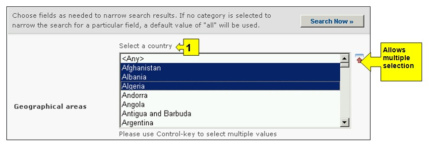
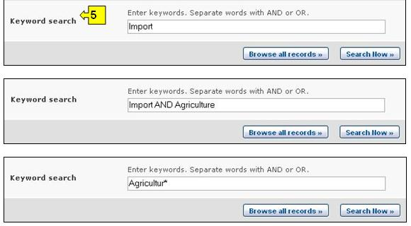

URL: http://bch.cbd.int/database/contacts/
议定书第19条要求指定国家主管部门和国家联络点。有关这方面的信息以及有关国家生物安全网址和数据库的信息可通过搜索国家联系点 获得。
可通过导航工具条上的查询信息下拉菜单上的链接、或通过查询信息页面左侧菜单中的链接或同一页面上关于国家联络点文字中的链接进入搜索国家联系点的界面。

图 3
在国家联系点搜索界面上用户可搜索：
-
卡塔赫纳生物安全议定书国家联络点，该联络点负责生物多样性公约秘书处与国家政府之间的联络；
-
生物安全信息交换所国家联络点，该联络点负责与生物多样性公约秘书处就建立和实施生物安全信息交换所进行联络；
-
议定书第17条下用于接受通知的紧急措施联络点；
-
国家主管部门，由各国指定并授权负责根据议定书第19条的要求行使行政功能；及
-
国家生物安全网址和数据库。

图 4

图 5
在 搜索国家联系点 页面上有五个搜索标准框，可用于对该数据库中的搜索进行进一步限定。每一个搜索标准框均有一个下拉式菜单，用于选择所需的标准。每一个下拉菜单的缺省设置是菜单顶端的第一个选项。在每一个框的右侧有一个按钮，使用户可以激活多重选择。一旦进入多重选择模式，可在按住Ctrl（控制）键的同时点击有关标准从而添加更多标准。
方框1[选择一个国家]在下拉菜单中列出了所有国家名，以便用户选择一个或多个具体国家进行搜索。

图 6
方框2[选择国家集团]在下拉菜单中列出了国家集团名，以便用户选择一个或多个具体国家集团进行搜索。国际集团清单包含所有主要的地理或政治国家集团，可将搜索限定在只由选定的集团成员提交的纪录条范围内。

图 7
方框3[国家联系点类型]列出了数据库中已有的国家联系点类型，并允许用户将搜索限定在具有特定职责的国家联系点或国家联系点组范围内。

图 8
方框4[记录日期]允许用户根据纪录条输入到生物安全信息交换所的日期限定搜索范围。下拉菜单提供了将搜索限定在某一选定时间框架（如前一天、上个月、去年等）内的若干个选项。

图 9
方框5[关键词搜索]提供了使用关键词对搜索进行限定的机会。用户可使用标准关键词句法（“和/或”操作结合）搜索几个词或词的核心部分（如“进口或出口”）。使用关键词进行的搜索结果只显示含有与搜索文字完全一样的纪录条而不会包含未输入的同义词（例如，只用关键词“Maize”(玉米)搜索所得到的纪录条只包含“Maize”而不包括“Corn”或”Zea mays”（玉米同义词）。

图 10
搜索页提供了三个按键用于生成查询结果。 键（搜索界面的顶端和底部均有）允许用户根据在搜索功能方框中选择的搜索标准启动搜索。搜索结果缺省设置为根据国家名字母顺序排列。 (位于搜索界面的底部)使用户可获得本数据库中所有记录条列表。
图 11
搜索结果 页在纪录条上方具有排列功能。这可用于根据针对具体信息类型的标准对纪录条进行排列。注意当用户选择不同的搜索标准时，排列标准也随之变化。

图 12
示例1：用户希望就有关改性活生物体无意越境转移或紧急措施问题查找巴拉圭的紧急措施联系点。通过从选择一个国家下拉菜单中选择巴拉圭并从国家联系点类型下拉菜单中选择“紧急措施（第17条）联系点”，用户将搜索缩小到最可能提供所需信息的纪录条范围中。

图 13
当点击 键后，搜索结果页显示出巴拉圭哪一个国家联系点有负责紧急措施的责任。选择该机构名称则用户可以打开含有该国家联系点详细内容的纪录条。

图 14
示例2：用户想查明所有东南亚国家联盟（东盟）成员国的生物安全信息交换所联络点。用户在选择国家集团方框中选择亚洲-太平洋 – 东南亚国家联盟，并在国家联系点类型方框中选择生物安全信息交换所联络点。选择 键即显示出东盟成员国国家生物安全信息交换所联络点的一系列结果。

图 15

图 16